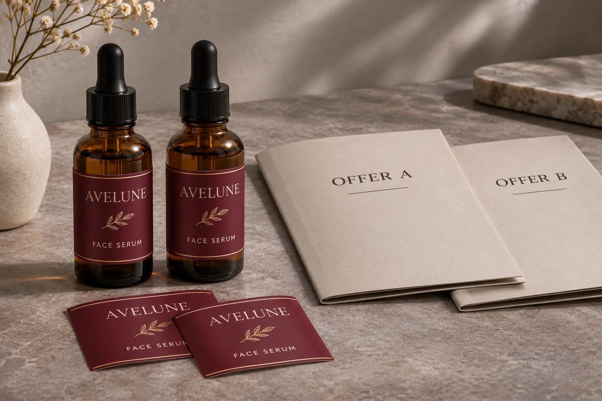

Choose a cosmetic label supplier by separating eligibility from preference. First confirm which offers can meet the job's non-negotiable requirements. Then compare the remaining offers on the same scope, using evidence that relates to your bottle, artwork, application and required receipt. A low price is useful only when you know what it buys and which decisions remain open.
This guide addresses the award decision after receiving proposals. The quote unit guide helps normalize quantities and the delivery scope guide separates freight responsibilities. Complete those comparisons before asking which supplier to select. An award worksheet should expose unresolved conditions, rather than conceal them in a single total score.

Write the gates before ranking suppliers
List the requirements whose absence prevents this order from proceeding. Depending on the actual project, these could include an accepted construction, approved artwork route, compatible supplied roll format or a feasible receiving milestone. Use requirements your team has actually established. Do not add a certification, test or decorative feature merely to make the comparison look thorough.
Give every gate an owner and a required evidence state. A supplier proposing a material is different from a supplier whose sample has been reviewed against the agreed requirements. A proposed dispatch estimate is different from an acknowledged arrangement with its prerequisites met. Record the actual state without promoting a proposal to approval.
If no offer meets a mandatory requirement, the immediate decision is to resolve the gap or revise the project with the authorized owner. Giving the most attractive incomplete offer a high score cannot satisfy the missing gate. Keep a conditional shortlist if that helps the next discussion, but do not label it a production award.
Request comparable evidence
Send each candidate the same current brief and identify any changes after the first quotation. Record the construction proposed, quantities by design, artwork version, finish reference, supply format and receiving requirement. Where an offer proposes an alternative, list it as an alternative and obtain the review it needs. Do not merge it invisibly with the base requirement.
Samples also need context. Avery's custom printing guidance distinguishes material sample packs from custom printed orders and describes separate proof arrangements for some formats. That is one provider's process, not a YT offer. It illustrates why the word sample alone is insufficient evidence: ask what each candidate's supplied item represents and what it cannot approve.
A generic finish sample can support a discussion of appearance while an actual construction on the intended bottle answers a different question. Use the sample deliverables record to request the missing output. Apply the same stated acceptance requirements to the candidates without pretending every provider offers an identical sampling service.
Use an award comparison worksheet
This editorial worksheet is a decision aid. Add one response column per candidate and keep the evidence reference beside each response. It is not an independently validated scoring system or a claim about YT's relative performance.
| Decision row | Compare for each offer | How to use the result |
|---|---|---|
| Eligibility | Mandatory requirement, evidence, responsible reviewer and current state. | Exclude or hold unresolved mandatory gates from the final award comparison. |
| Commercial scope | Same quantities and revisions; print, setup, sample and delivery inclusions. | Compare acknowledged scope; identify excluded or unpriced work separately. |
| Execution fit | Confirmed prerequisites, application handoff, receiving milestone and open dependencies. | Compare feasible routes and the conditions that would reopen them. |
| Preference and award | Buyer priorities, evidence-based differences, selected scope and remaining conditions. | Record the reason, authorized decision and exact requirement version being awarded. |
Complete eligibility first. Reconcile commercial scope next. Ask the relevant operators to review execution fit, then record the buyer's priorities before choosing among eligible offers. The output should name the selected proposal and its version, explain the tradeoff and identify any condition that still prevents release. Keep rejected or deferred offers with a reason so the comparison can be revisited after a material change.
Compare two plausible routes
In a hypothetical serum project, one eligible offer costs less but requires the brand to coordinate a separate application handoff. Another includes a different confirmed handoff arrangement. The buyer can compare the additional work, accountable owners and total acknowledged scope. The cheaper print line may still be the right choice when the brand can perform that work. The worksheet makes the reason visible.
In another project, one supplier offers an attractive price and a generic sample, while another has provided the agreed applied reference. If applied evidence is a mandatory gate, the first offer remains under review. The buyer can request the missing sample and keep the offer on the shortlist. It should not be treated as equally qualified just because both candidates have sent something called a sample.
Price, coordination and receiving flexibility can be legitimate preferences after eligibility is established. Let the actual buyer decide their relative importance. Avoid universal weighting percentages that imply every skincare launch has the same budget, internal capacity or deadline. A preference can change; document when it does and check whether the earlier comparison still holds.
Freeze the awarded scope
Before release, obtain an acknowledgment against the selected artwork revision, quantities, construction, format and receiving arrangement. Identify the person who can approve changes. If the bottle, copy or destination changes after selection, ask which parts of the proposal need reconfirmation. The order change guide addresses changes once work is underway.
Hold the award if the cheapest offer depends on an unreviewed alternative, an important cost is still excluded, or the supplier and receiving team are working to different milestones. The next action is a precise clarification request. A spreadsheet total does not turn those gaps into accepted commercial terms.
Request a proposal against one clear brief
For cosmetic bottle labels, send the current artwork, bottle reference, quantities by version, construction direction, application requirements and receiving milestone. Identify mandatory evidence and ask for inclusions, alternatives and remaining conditions to be listed separately. The form prepares a message; send files by email or WhatsApp.
Prepare a comparable label inquiry